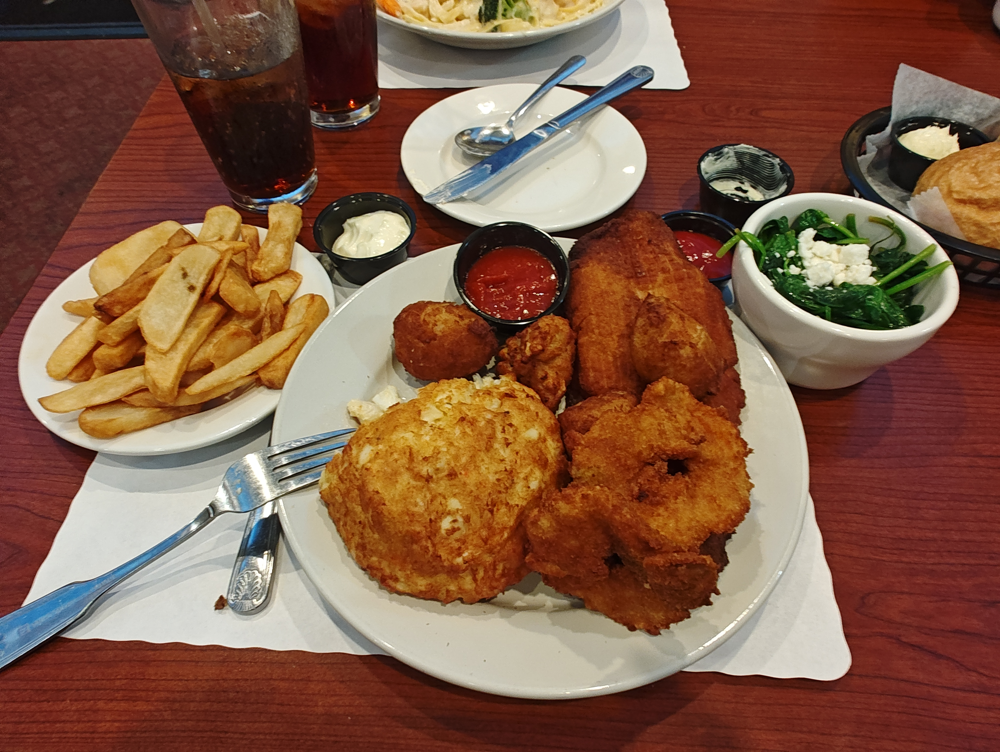

Image Description
This image captures a delicious meal of crab cake and fries, taken at the Annapolis waterfront on September 15, 2024, at around 7:30 PM Eastern Time. The golden-brown crab cake is perfectly cooked, with a crispy exterior and a tender, flavorful interior. The fries are golden and crispy, complementing the crab cake perfectly. The meal is served on a white plate with a side of tartar sauce, making it an inviting and appetizing dish that evokes a sense of indulgence and satisfaction.
Image File Type Information
The image file type is JPEG format. It has a resolution of 4000X3000 pixels and a file size of approximately 10.5 MB. It was captured using a motorola motorola edge plus 2023.
Why I chose this image
I chose this image because it reminds me of a memorable dining experience at the Annapolis waterfront, where I enjoyed a delicious meal of crab cake and fries. The image captures the essence of the meal and the ambiance of the location, making it a perfect representation of my culinary experience.
Image Source
This image was taken by me, Emmanuel Onyike, on September 15, 2024, at the Annapolis waterfront. I used my motorola edge plus 2023 to capture this mouthwatering view of the crab cake and fries. The image is stored in JPEG format and has a resolution of 4000X3000 pixels, with a file size of approximately 10.5 MB.